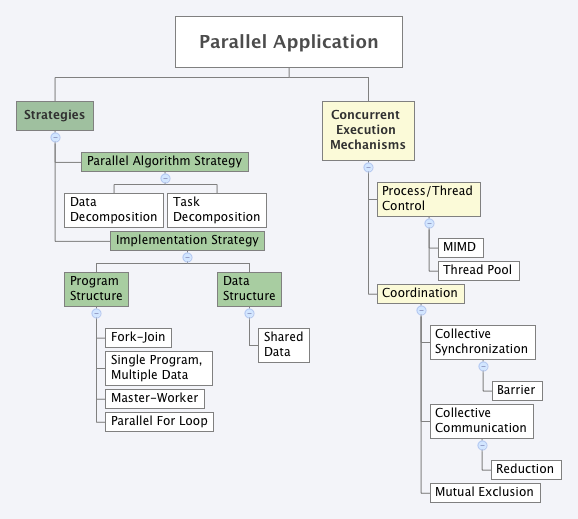

Categorizing Patterns¶
There has been a fair amount of work by several researchers who have catergorized patterns found in parallel programs. We have shown you simple examples of several of them that are very common when writing OpenMP programs that use shared memory. Now that you have seen them, you can try to imagine the patterns falling into the categories shown on the following diagram:
Most programs you will write will include patterns for an Algorithm Strategy (both data decomposition and task decomposition), some of the Implementation Strategies (if not all), and some of the Coordination Mechanisms. The patternlets show simple examples that you can use as a guide. In OpenMP, most programs use various shared data in memory as their data structure implementation strategy. The Process/Thread Control Mechanism patterns are built in to any OpenMP program. Multiple Instruction, Multiple Data (MIMD) is built in because forked threads operate independently on different data. Likewise, pools of threads are part of every compiled OpenMP threaded program.

{kind=link}